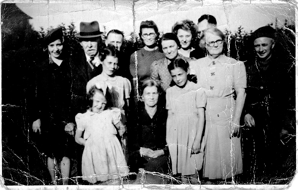
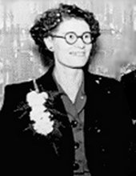

Surname Origin: This name is of ancient Anglo-Norman origin, and comes from the Anglo-Saxon word "Fugal", meaning fowl. It seems that the early bearers of this name not only "pursued the captured wild fowl", but also sold them, for in its early form the French suffix,"ere", following "fowl", meant an agent or dealer.

The Fowlers originate from the South West of England and can be traced back to Whitchurch Canonicorum, Dorset, the birth place of James Fowler in 1771. His mother is recorded as Sarah but unfortunately there is no recorded fathers name. James, who was later described as a 'flax dresser' married Mary Legge of Symondsbury, in Whitchurch Canonicorumin in 1799. They had four children that we are aware of, their second son being Benjamin who was born in 1803. By this time James and Mary had moved from Dorset to Taunton in Somerset.
Ben Fowler was a flax dresser and ostler before becoming a foundry fireman at Edward Whightmans Foundry in Chard. He was to work in the foundry until he was in his 70's. Ben married Hannah Lickey of Cothelstone in 1826 and they had 7 children. Ben outlived Hannah and married again to Mary Pearce in 1867. Ben and Hannah's oldest surviving son was James who was born in Taunton in 1837. James followed his father into the foundry and married Emma Gooding in 1859 and they had two girls before Emma's death. In 1863 James was married a second time to Rebecca Warry. James and Rebecca had five children, their youngest son also being named James Fowler .
By this time the family had moved from Somerset to Bedford, probably in search of work, and it was here that James (jnr) was born in 1870. After a brief spell in Bedford the family moved again, this time to Nottingham and settled in Sneinton. James married local girl Eliza Peck in October 1891, their first son Harry, being born out of wedlock in 1889.

James Fowler was a bridge painter and gas fitter and the family story is that he died leaving his wife Eliza with a young family to raise. It is said that he died around 1908 but no record of his death was ever found. Subsequently the availability of DNA testing revealed the truth. James had four children with Eliza before abandoning his wife and children in 1896. Eliza then met John Whitaker with whom she had three further children before John died in 1908.
Eliza was eventually remarried to Harold Clark in 1915 and they brought up their family in Manvers Street, Sneinton.
The four children fathered by James were Harry, who was born before James and Eliza married (married Lavinia Wileman), Lily (married Harry Lee), Clara (married Harold Samples) and Bertie Fowler . Bertie joined up during the First World War and was killed at Ypres in Belgium in 1917. There are three children for whom James Fowler is stated as the father on the birth certificate, however their real father was John Whitaker. John Edward (Jack) Fowler married Annie Hackett and lived in Hutton Street, being bombed out of their home in 1942, they eventually settled in Colwick. Horace died at just five years of age in 1913. May Fowler , their only daughter married Bill Drury .


